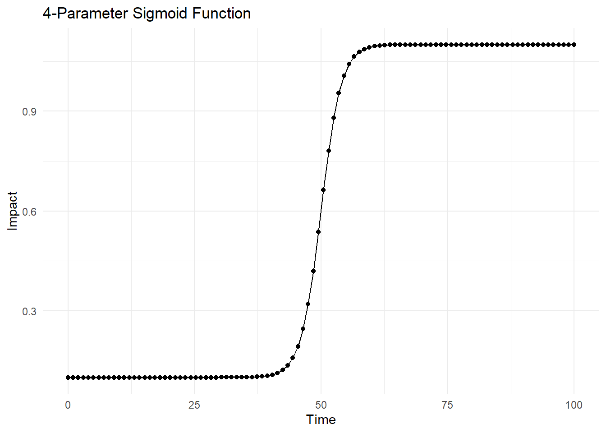
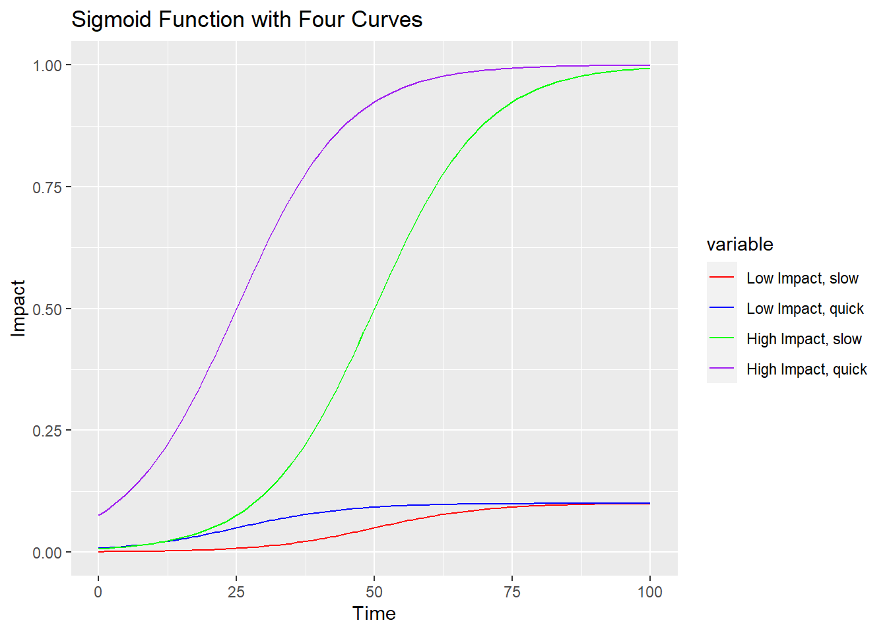

Some musing about the relation of time and impact and how AI might or might not be useful.
Author
Andreas Handel
Published
August 4, 2023
Introduction
I don’t know why, but for some reason I was recently thinking about the relation between time invested in a task or project and the return one gets from it. At the same time, I have been exploring how to use AI tools productively. Those two strands of thinking ended up merging in my head and I had the idea for this maybe somewhat strange post.
Time versus Impact
I was contemplating the impact of various projects I’m working on, and how that is related to the time dedicated to each project. I ended up conceptualizing them as a sigmoid curve (see below). The next question I asked myself is how to optimize those curves. This thought merged with my current interest in exploration of AI tools and how they might be able to help in that optimization. So I decided to write a post about it, and use AI to help me do it.
AI as helper
First, I asked ChatGPT 3.5 to make a ggplot2 figure using R code that shows the sigmoid relation between time and imact I had in mind. Here is the prompt I used and the code I got.
Note
ChatGPT 3.5 prompt
Write well-documented R code that creates a ggplot2 figure Time from 0 to 100 on the x-axis and Impact from 0 to 1 on the y-axis. Model the relation between Time and Impact as a 4-parameter sigmoid function. Give the model parameters meaningful names. Do not include any model fitting.
The following code chunk is the un-edited return from ChatGPT.
# Load required librarieslibrary(ggplot2)# Function to calculate 4-parameter sigmoid functionsigmoid_function <-function(time, a, b, c, d) {1/ (1+exp(-a * (time - b))) - d + c}# Define model parameters with meaningful names# a: controls the slope of the sigmoid function# b: controls the midpoint of the sigmoid function on the x-axis# c: controls the vertical shift of the sigmoid function on the y-axis# d: controls the horizontal shift of the sigmoid function on the y-axisa <-0.5b <-50c <-0.2d <-0.1# Generate data for Time and Impact (replace with your actual data if available)time <-seq(0, 100, length.out =100)impact <-sigmoid_function(time, a, b, c, d)# Create a data framedata_df <-data.frame(Time = time, Impact = impact)# Create the ggplot2 figureggplot(data_df, aes(x = Time, y = Impact)) +geom_line() +geom_point() +labs(x ="Time", y ="Impact") +ggtitle("4-Parameter Sigmoid Function") +theme_minimal()

The prompt and result I’m showing here was not my first try. I had to rephrase a few times. Initially it always wanted to give me code that involved fitting a model, which is not what I was after. But it still took only a few minutes to get what I needed. I estimate if I had hand-written the code, it would have taken around 10-20 minutes.
Time-Impact optimization
While that figure above shows the general pattern I had in mind relating time to impact, I wanted a few more curves to illustrate different scenarios. Again I asked an AI system for help, this time using Bing (which is using a version of ChatGPT).
Note
Bing AI prompt using ‘Balanced’ Mode
Write well-documented R code that creates a ggplot2 figure with Time from 0 to 100 on the x-axis and Impact from 0 to 1 on the y-axis. Model the relation between Time and Impact as a 4-parameter sigmoid function. Give the model parameters meaningful names. Do not include any model fitting. Show 4 different curves in the plot with different values for the model parameters. Add legend labels to the plot.
The code I got (see further below) was almost what I wanted, but I did want the parameter values for the 4 curves to have specific values to illustrate the ideas I describe below. Therefore, I manually edited to values. And I changed the labels for the curves to what I wanted them to say. The rest is code directly returned from the AI.
Note that despite my request for meaningful parameter names, I only got letters. In some other iterations of me playing with it, I got it to produce more meaningful names (but other parts of the return weren’t what I wanted).
This code also didn’t quite parameterize the function the way I would do it, e.g. I would write it in a way that it’s easier to quickly identify the max, zero, slope and 50% parameters. But I figured this was good enough and the best single try I was able to get.
It would be very easy to combine the results from a few iterations into a version of the code that does everything I want. In fact, I found it rather useful to ask it to update the code. I think I’ll explore an interactive session in another post. Here, I used the one return that was closest to what I wanted following a single prompt.
library(ggplot2)# Define the sigmoid functionsigmoid <-function(x, a, b, c, d) { d + (a - d) / (1+exp(-c * (x - b)))}# Define the parameters for the sigmoid functiona <-0.1b <-50c <-0.1d <-0# Create a data frame with Time values from 0 to 100df <-data.frame(Time =seq(0, 100))# Add columns for Impact values using different parameter valuesdf$Impact1 <-sigmoid(df$Time, a = a, b = b, c = c, d = d)df$Impact2 <-sigmoid(df$Time, a = a, b = b *0.5, c = c , d = d)df$Impact3 <-sigmoid(df$Time, a =10*a, b = b , c = c, d = d)df$Impact4 <-sigmoid(df$Time, a =10*a, b = b *0.5, c = c, d = d)# Melt the data frame into long format for plottingdf.melted <- reshape2::melt(df, id.vars ="Time")# Create the plot using ggplot2ggplot(data = df.melted,aes(x = Time,y = value,color = variable)) +geom_line() +scale_color_manual(values =c("red", "blue", "green", "purple"),labels =c("Low Impact, slow", "Low Impact, quick", "High Impact, slow", "High Impact, quick")) +labs(x ="Time",y ="Impact",title ="Sigmoid Function with Four Curves")

Back to the topic at hand, time and impact.
What I want to illustrate with these curves is the idea that some projects can be done faster or slower, and some have inherently more impact than others. Even if you can do a low-impact project fairly quickly, it’s still a low-impact project. Figuring out which projects to work on for the most impact is something that AI tools currently can’t help with, and it will likely take a while before they can be of substantial help on that end (though they might provide some useful pointers if one engages in a dialogue with the AI to try and reflect what one should work on).
It seems to me what AI tools currently can do is shift the curve along the x-axis, meaning they can potentially help reduce the time it takes to reach a certain level of outcome/impact.
In the figure above, that means the human has to figure out how to pick high-impact projects, while AI can be used to speed up the execution of projects, especially for manual and tedious tasks.
For instance, if had written this - arguably fairly low impact - blog post fully manually, including the coding, it would have probably taken me at least an hour. Using AI tools, I got it a good bit under an hour, and that includes me fiddling with the AI prompts to figure out how to best phrase things.
Further musings
In addition to writing code to illustrate my thought, I decided to ask the AI tools to explore the time-impact topic themselves. Here are my prompts
Note
ChatGPT 3.5 prompt
Write a blog post discussing the relation between time and impact under the assumption of a sigmoid relationship and explain how AI can and cannot help to optimize this relation.
Here is what I got.
Title: Unraveling Time-Impact Relationships with the Sigmoid Function: Leveraging AI for Optimization
Introduction:
Time and impact are often interconnected in various scenarios, especially in fields such as business, healthcare, and social sciences. Understanding the relationship between these two variables can be critical for decision-making and strategic planning. One way to model this relationship is by using the sigmoid function. In this blog post, we will delve into the concept of the sigmoid function, its implications, and explore how Artificial Intelligence (AI) can assist in optimizing this critical relationship.
The Sigmoid Function:
The sigmoid function is a mathematical function that exhibits an S-shaped curve. It has four parameters: baseline (a), maximum impact (b), time to reach 50% impact (c), and steepness (d). The function smoothly transitions from the baseline value to the maximum impact as time progresses. The steepness parameter controls how rapidly this transition occurs.
Modeling Time-Impact with the Sigmoid Function:
Assuming a sigmoid relationship between time and impact implies that as time increases, the impact will initially increase gradually, and at some point, it will reach a maximum value, leveling off afterward. The time to reach 50% impact (c) represents the inflection point, indicating the time at which the impact grows most rapidly.
Applications in Real-Life Scenarios:
Business: In marketing, understanding how a product’s impact changes over time can help strategize product launches, promotional campaigns, and identify peak impact periods. AI can analyze past sales data and customer behavior to identify patterns and forecast future impacts, aiding in better resource allocation.
Healthcare: In pharmacokinetics, the sigmoid model is used to describe the relationship between drug concentration and its effect in the body over time. AI-powered drug dosing algorithms can optimize therapeutic outcomes while minimizing side effects based on this relationship.
Social Sciences: Social media engagement and information propagation exhibit sigmoid behavior. AI algorithms can analyze user engagement data to predict trends and virality of content, enabling targeted dissemination of information.
AI’s Role in Optimizing Time-Impact Relationship:
AI can play a significant role in optimizing the time-impact relationship in various ways:
Data Analysis: AI algorithms can efficiently analyze vast amounts of historical data to identify patterns and trends in time-impact relationships. This analysis can inform decision-making and resource allocation strategies.
Predictive Analytics: AI can create predictive models based on historical data to forecast future impacts and their timelines. Such models help organizations plan for potential scenarios and make data-driven decisions.
Parameter Optimization: AI-driven optimization techniques can determine the best parameter values for the sigmoid function, enabling better fit to real-world data and more accurate predictions.
Automation: AI can automate repetitive tasks related to data collection, analysis, and reporting, allowing professionals to focus on higher-level decision-making.
Limitations of AI in Optimizing Time-Impact Relationships:
While AI can provide valuable insights and predictions, it does have some limitations:
Data Quality: AI models heavily depend on the quality and representativeness of the data. Biased or incomplete data can lead to inaccurate predictions and optimization.
Ethical Considerations: AI optimization must adhere to ethical standards, especially in areas like healthcare, where decisions can significantly impact individuals’ lives.
Interpretability: AI models, such as deep learning neural networks, can be complex and challenging to interpret, making it difficult to understand the underlying reasoning for certain predictions.
Conclusion:
Modeling the relationship between time and impact using the sigmoid function offers valuable insights into various real-life scenarios. Leveraging AI to optimize this relationship can lead to better decision-making, resource allocation, and improved outcomes in fields like business, healthcare, and social sciences. However, AI’s use must be mindful of data quality, ethical considerations, and the need for human interpretability to ensure responsible and beneficial optimization. As AI continues to advance, it holds great promise in unraveling the complexities of the time-impact relationship and enhancing our ability to make informed decisions for a better future.
The first 3 sections are fairly decent. After that, things get wonky and don’t make much sense.
Here is another try, this time using Bing. It also runs ChatGPT but is connected to the internet, and thus behaves somewhat differently.
Note
Bing AI prompt
Look up online articles discussing the relation between time and impact, then write a post on that topic under the assumption of a sigmoid relation between the two quantities, and explain how AI can and cannot help to optimize this relation.
Here is what I got.
Time and impact are two important factors that affect the success of any project, goal, or endeavor. Time is the duration or period that is available or required for something to happen. Impact is the effect or influence that something has on another thing or situation. The relation between time and impact can be complex and nonlinear, depending on the context and the variables involved. One possible way to model this relation is using a sigmoid function, which is a mathematical function that has an S-shaped curve.
A sigmoid function can be used to describe how the impact of an action or intervention changes over time. For example, suppose you want to improve your health by exercising regularly. At first, you may not see much impact from your exercise, as your body adapts to the new routine. This is the lower part of the S-curve, where the impact is low and increases slowly with time. However, as you continue to exercise, you may start to see more noticeable results, such as increased stamina, strength, and well-being. This is the middle part of the S-curve, where the impact is high and increases rapidly with time. Finally, as you reach your optimal level of fitness, you may not see much further improvement from your exercise, as your body reaches a plateau. This is the upper part of the S-curve, where the impact is high but increases slowly with time.
The sigmoid function can also be used to describe how the impact of an action or intervention varies with different levels of time investment. For example, suppose you want to learn a new skill by taking an online course. If you invest too little time in the course, you may not learn much from it, as you miss out on important concepts and practice opportunities. This is the lower part of the S-curve, where the time investment is low and the impact is low. However, if you invest a moderate amount of time in the course, you may learn a lot from it, as you grasp the key ideas and apply them effectively. This is the middle part of the S-curve, where the time investment is optimal and the impact is high. Finally, if you invest too much time in the course, you may not gain much more from it, as you encounter diminishing returns and opportunity costs. This is the upper part of the S-curve, where the time investment is high and the impact is low.
AI can help to optimize the relation between time and impact in various ways. For example, AI can help to:
Analyze data and identify patterns that reveal how time and impact are related in different scenarios.
Predict the optimal amount of time that should be invested in an action or intervention to maximize its impact.
Provide feedback and guidance that help to adjust the time and impact levels according to changing goals and circumstances.
Automate or streamline tasks that are repetitive, tedious, or low-impact, saving time and resources for more impactful activities.
However, AI cannot help to optimize the relation between time and impact in every situation. For example, AI cannot help to:
Account for human factors that affect how time and impact are perceived and valued by different individuals and groups.
Capture the complexity and uncertainty that often characterize real-world problems and solutions.
Replace human creativity and intuition that are essential for generating novel and innovative ideas and approaches.
Ensure ethical and responsible use of time and impact data and decisions.
Therefore, while AI can be a powerful tool for optimizing the relation between time and impact, it should not be used without human oversight and input. AI should complement rather than replace human judgment and agency in determining how best to use our time and make an impact.
I find that second result pretty good. While some points miss the mark, others are spot-on. I could see myself editing this and incorporating good chunks of it in further musings on the topic (maybe with or without telling the world that AI helped).
Conclusion
I’m certain I’m not the first one to think of the time versus impact relation. I didn’t bother searching around for similar write-ups. I’m sure they exist. Many are probably better than what I scribbled down. For me, the point of this blog post was to quickly write down my (likely not very original) thoughts on this idea, AND use AI tools to help me write the post. It worked surprisingly well. This is my first time using AI for something productive, instead of just playing with it. It certainly looks promising.
Further resources
I’m just starting to learn about the new large-language model based AI tools and how to use them productively. I found some of the posts by Ethan Mollick to be very useful and informative.
Acknowledgments
As always, I rarely come up with completely new stuff, instead I cobble it together from other resources. I’m sure the ideas of time versus impact have been floating around for a long time (e.g., as the 80/20 principle) and I likely read ideas of that sort many times in various books and online sources. I just can’t think of a specific one to point to that might have most likely inspired my thoughts. For the AI bits, I very much followed ideas by Ethan Mollink that he describes in several of his blog posts on the website linked above.
Of course, thanks also goes to the creators of these pretty impressive AI tools, and all those folks whose work the AI engineers used (stole?) to train these AI systems. The ethics of this whole endeavor are certainly dicey, but not a topic I feel qualified to talk about.